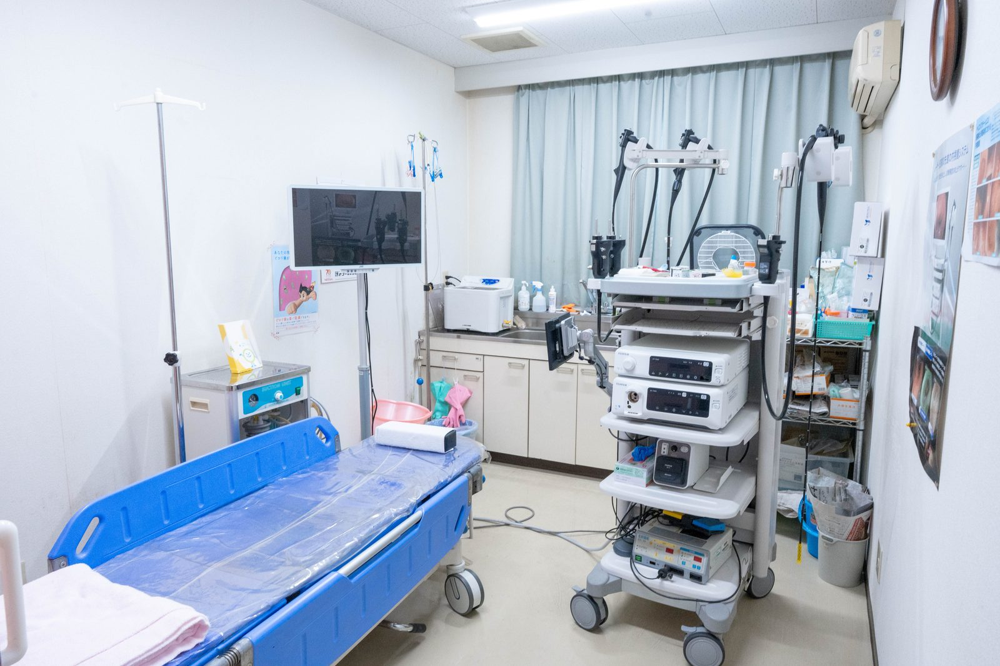

胃カメラ検査はつらいイメージがあるのですが、大丈夫でしょうか？
A. 回答当院では新世代の内視鏡システムを備え、口からの検査だけでなく、鼻から挿入する「経鼻内視鏡」による検査にも対応しています。経鼻内視鏡は口からの検査に比べてえずきが少ないとされ、検査中に医師と会話をすることもできます。
経鼻内視鏡の特徴
- スコープが細く、舌の付け根に触れにくいため、えずきが起こりにくいとされています
- 検査中も会話が可能で、気になることをその場で確認できます
- 鎮静剤を使わずに受けられるため、検査後すぐに帰宅・車の運転が可能な場合が多いです（体調により異なります）
経口内視鏡と経鼻内視鏡のちがい
胃カメラには、口から入れる「経口内視鏡」と、鼻から入れる「経鼻内視鏡」があります。見ている臓器は同じで、どちらが優れているというものではなく、それぞれに向き・不向きがあります。一般的にいわれている違いを整理すると、次のようになります。
| 項目 | 経口内視鏡（口から） | 経鼻内視鏡（鼻から） |
|---|---|---|
| 入れる場所 | 口から、のどを通して挿入します | 鼻の穴から、のどの奥を通して挿入します |
| えずきやすさ | 舌の付け根にスコープが触れるため、えずきが起こりやすいとされています | 舌の付け根に触れにくく、えずきが起こりにくいとされています |
| 検査中の会話 | 口がふさがるため会話は難しくなります | 口が空いているため、検査中も会話ができます |
| スコープの太さ | 経鼻用より太いものが使われます | 細いスコープを使います |
| 向いていない場合 | 強い嘔吐反射がある方には負担になることがあります | 鼻が狭い方、鼻の病気や鼻血が出やすい方には難しい場合があります |
鼻の通り道の広さには個人差があり、実際に鼻の状態を確認したうえで経口に切り替えることもあります。過去の検査でつらい思いをされた方、鼻炎や鼻中隔のゆがみを指摘されたことがある方は、あらかじめ医師にお伝えください。どちらの方法にするかは、症状や体格、これまでの検査の経験をふまえて診察時にご相談しながら決めていきます。
どんな症状のときに検査をおすすめしていますか
胃の不快感、胸やけ、みぞおちの痛み、黒い便、原因不明の貧血などの症状がある方や、健診で異常を指摘された方、ピロリ菌感染が疑われる方などに検査をご案内しています。逆流性食道炎、胃潰瘍、胃がん、大腸ポリープ、大腸がんなどの早期発見にもつながります。
こんなことが続いていませんか
- みぞおちの痛みや張りが、数週間以上つづいている
- 胸やけ、酸っぱいものが上がってくる感じがある
- 食べ物がつかえる感じ、飲み込みにくさがある
- 黒い便が出た、健診で貧血を指摘された
- 食欲が落ちた、体重が思いあたる理由なく減った
- 家族に胃の病気にかかった方がいる、ピロリ菌を指摘されたことがある
胃カメラでわかること
胃カメラは、食道・胃・十二指腸の粘膜をカメラで直接観察する検査です。バリウムを使った検査では影の形から推測するのに対し、内視鏡では粘膜の色調やわずかな凹凸まで見ることができるため、早い段階の変化をとらえやすいとされています。
- 食道の炎症（逆流性食道炎など）や、食道の粘膜の変化
- 胃炎の広がり方、胃潰瘍・十二指腸潰瘍の有無
- ポリープやできものの有無、胃がんを疑う所見の有無
- ピロリ菌感染をうかがわせる胃粘膜の状態
- 出血しているところがないか
検査中に気になる部分が見つかった場合は、その一部を採取して顕微鏡で調べる検査（生検）を行うことがあります。組織を採る操作そのものに痛みを感じることはほとんどないとされていますが、結果が出るまでには日数がかかります。結果のご説明の時期については、検査のときにご案内します。
なお、症状の原因が胃や食道ではなく、腸や胆のう、すい臓などにある場合もあります。胃カメラで大きな異常が見つからなかったときは、必要に応じて血液検査や超音波検査、大腸の検査などを組み合わせて調べていきます。

検査前日から検査後までの流れ
胃カメラは、胃の中が空っぽの状態でないと粘膜がよく見えません。そのため一般的には、前日の夕食を早めの時間にとり、それ以降は食事を控え、当日の朝は食べずに来院していただく流れになります。水分については、検査までの時間や体調によって扱いが変わりますので、当院からお伝えする指示に従ってください。
持病のお薬を飲んでいる方は、当日の飲み方について事前の確認が必要です。とくに血液をさらさらにするお薬や糖尿病のお薬を使っている方は、自己判断で中止も継続もせず、必ず事前に医師へお申し出ください。お薬手帳をお持ちいただくと確認がスムーズです。
検査当日は、受付後に検査の準備を行い、鼻または口の通り道に局所麻酔をしてから検査に入ります。観察そのものにかかる時間は比較的短いことが多いのですが、受付から会計までの全体の所要時間は、準備や検査後の休憩、当日の混み具合によって変わります。おおよその目安を知っておきたい場合は、お電話（086-525-0600）でご確認ください。
眠った状態で受けたいというご希望をお持ちの方もいらっしゃいます。鎮静剤を使うかどうかは、体調や持病、検査後の過ごし方によって考え方が変わり、使用した場合はその日の運転を控えていただくのが一般的です。当院で鎮静を用いた検査ができるかどうかについては、お電話でご確認ください。
検査のあとは、のどや鼻の麻酔が切れるまで飲食を控えていただきます。麻酔が残った状態で飲食すると、むせたり気管に入ったりすることがあるためです。生検を行った場合は、当日の食事内容や飲酒、激しい運動について別途ご案内します。検査後に強い腹痛、吐血、黒い便、息苦しさなどがみられた場合は、様子をみずにご連絡ください。
検査の受け方
検査をご希望の方、症状についてご相談されたい方は、まず外来を受診いただき、医師が問診のうえで検査の要否や方法（経口・経鼻）をご相談しながら決定します。症状があって受ける検査は保険診療の対象となります。費用や検査日の空き状況については、お電話でもお問い合わせいただけます。
参考にした情報
検査についてのご相談はお電話でも承っております
最終更新：2026年8月26日